Brass Type Cabinet
Over the summer I took on my most ambitious woodworking project yet — a cabinet built to store the brass type I use for hot foil stamping. I based the tray size on an antique "Quarter Case" made by the Hamilton Manufacturing Company of Two Rivers, Wisconsin.
Overview
With 24 cases — the correct term for the drawers that hold type, hence "uppercase" and "lowercase" — plus a utility drawer, the finished cabinet stands just over three feet tall. Each case has 30 compartments, big enough to hold one letter with room left over for punctuation or numbers. It's made of plywood and particle board, and it may not be the prettiest piece of furniture I've built, but it gets the job done.

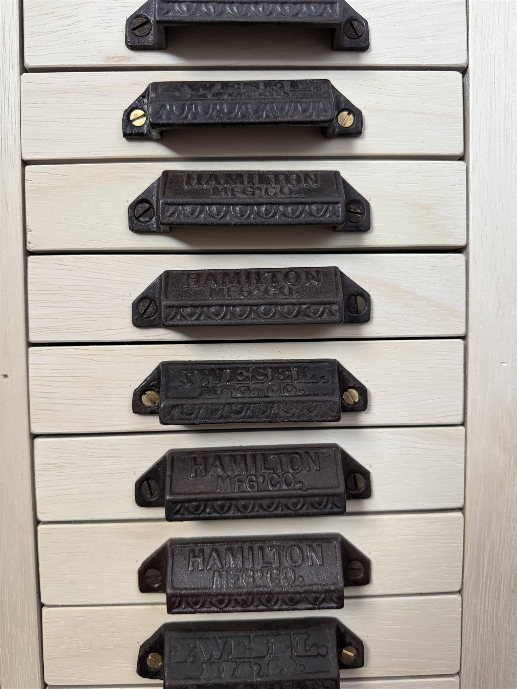
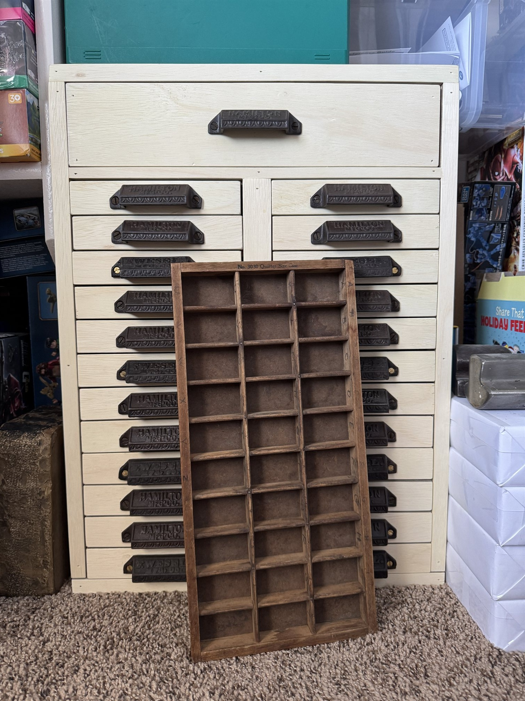
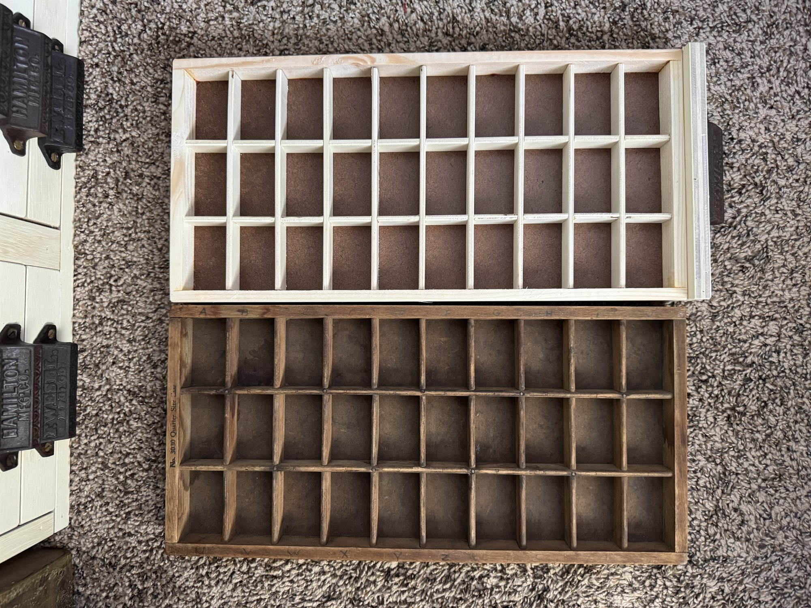
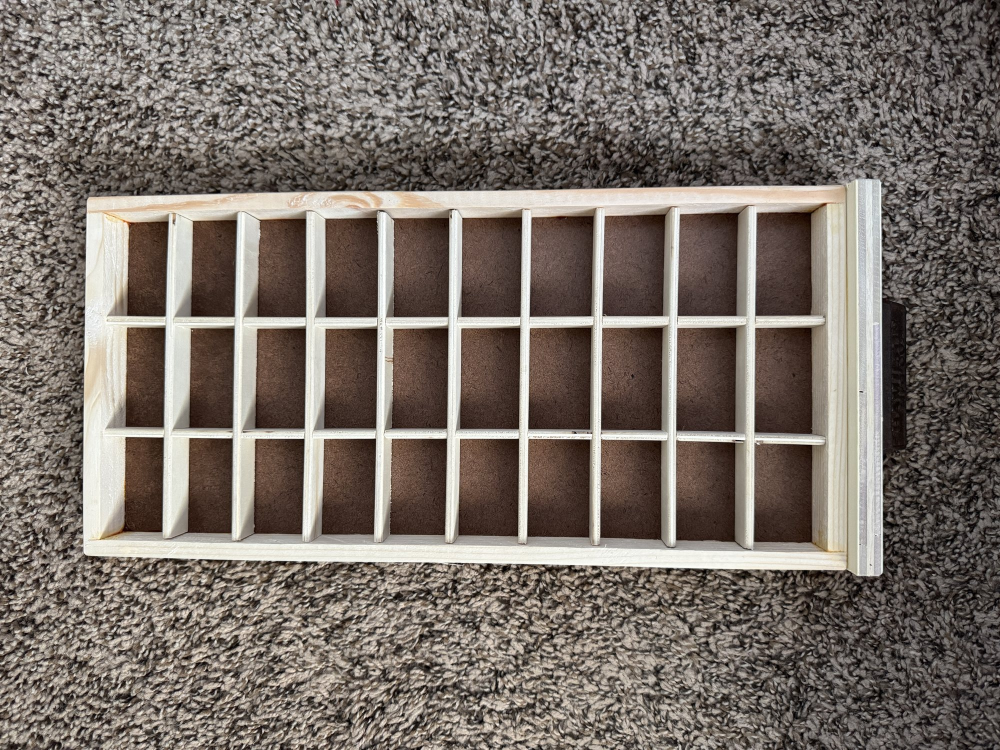
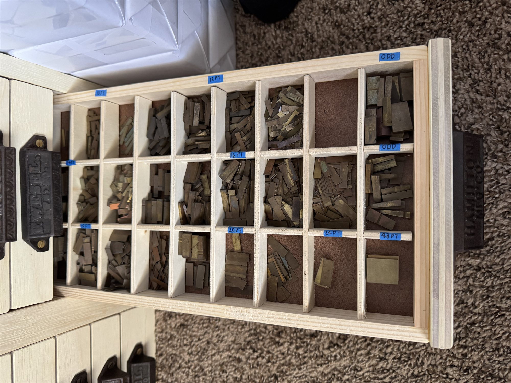
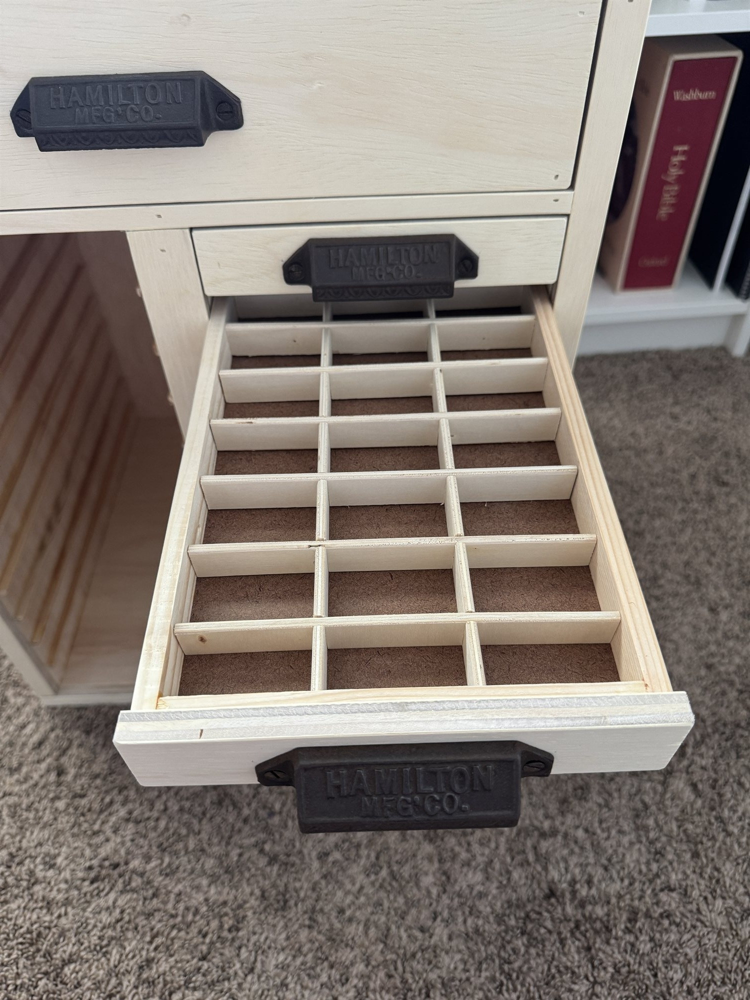
Process
Every case tray is built from thin plywood strips, notched and interlocked into a 30-compartment grid, then set into a carcass sized to hold two trays per opening. Below are some shots from along the way.
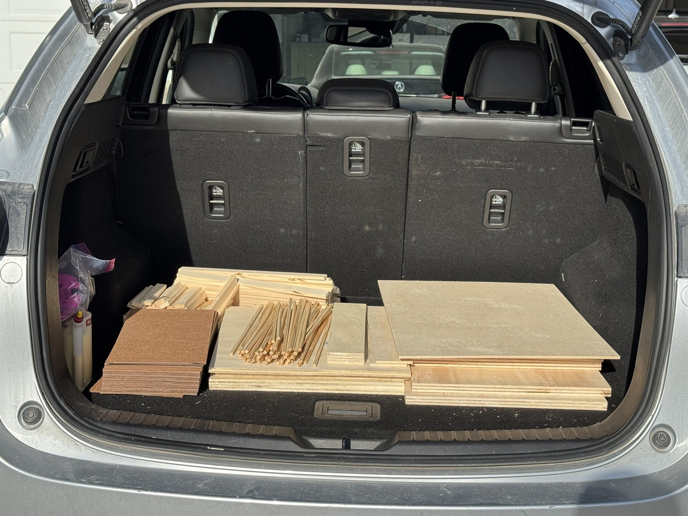
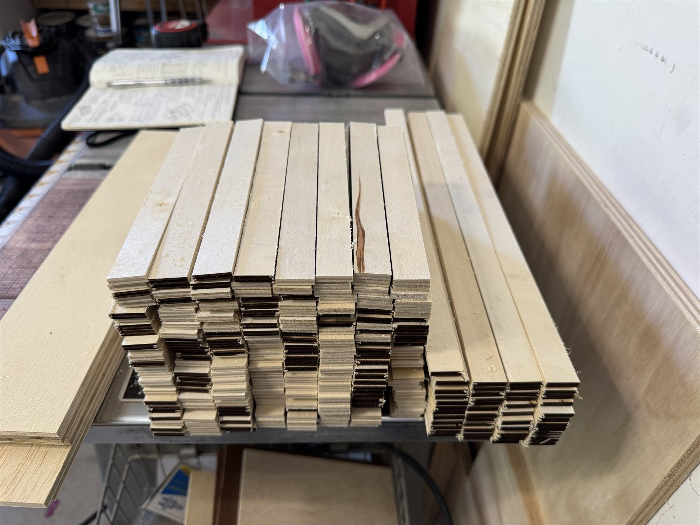
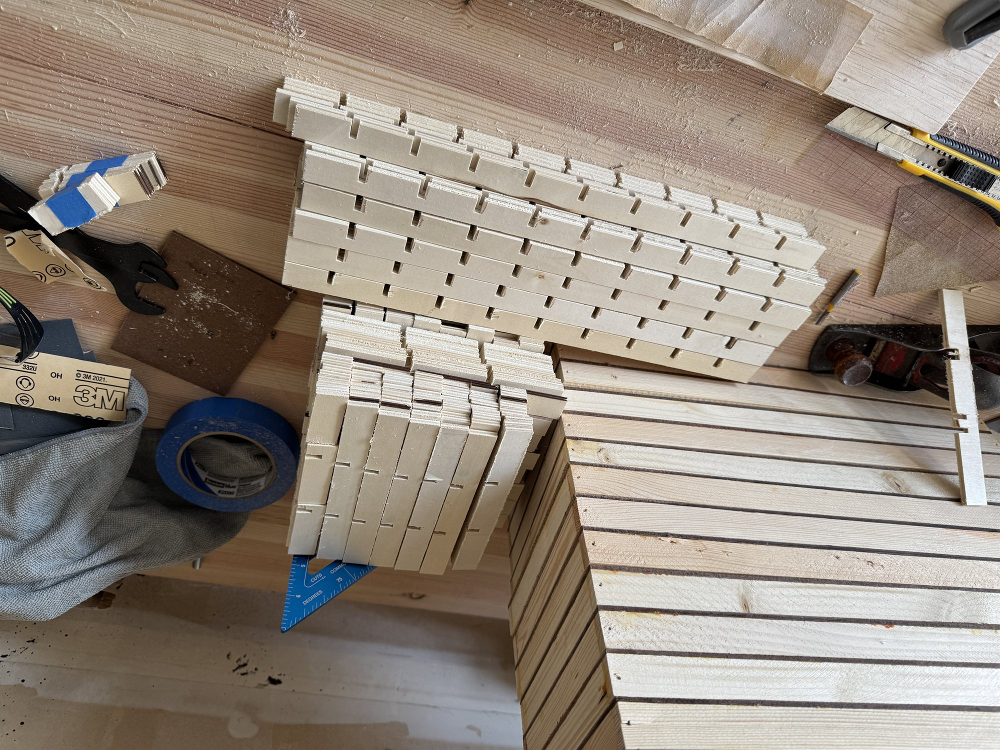
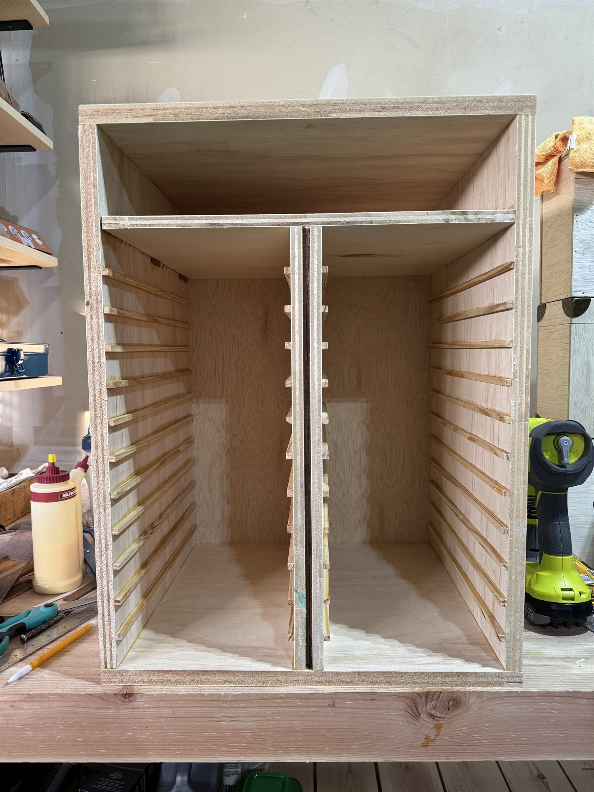
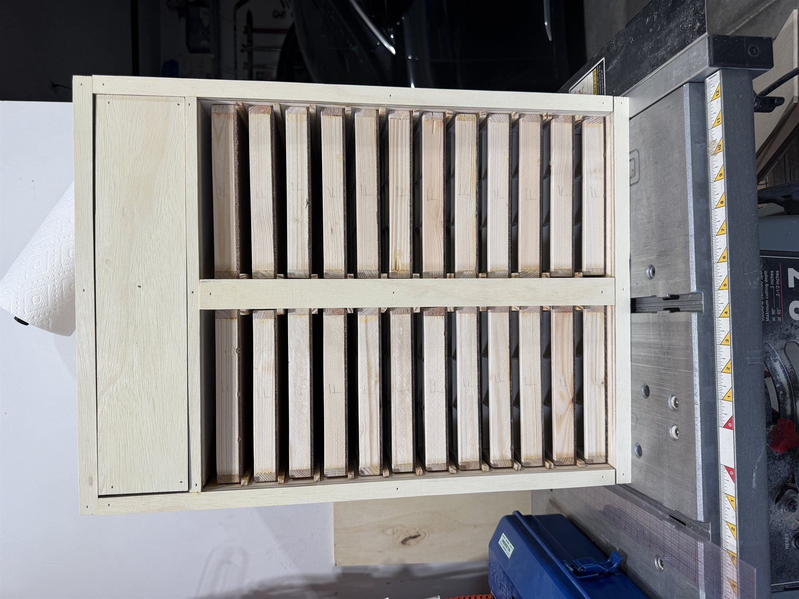
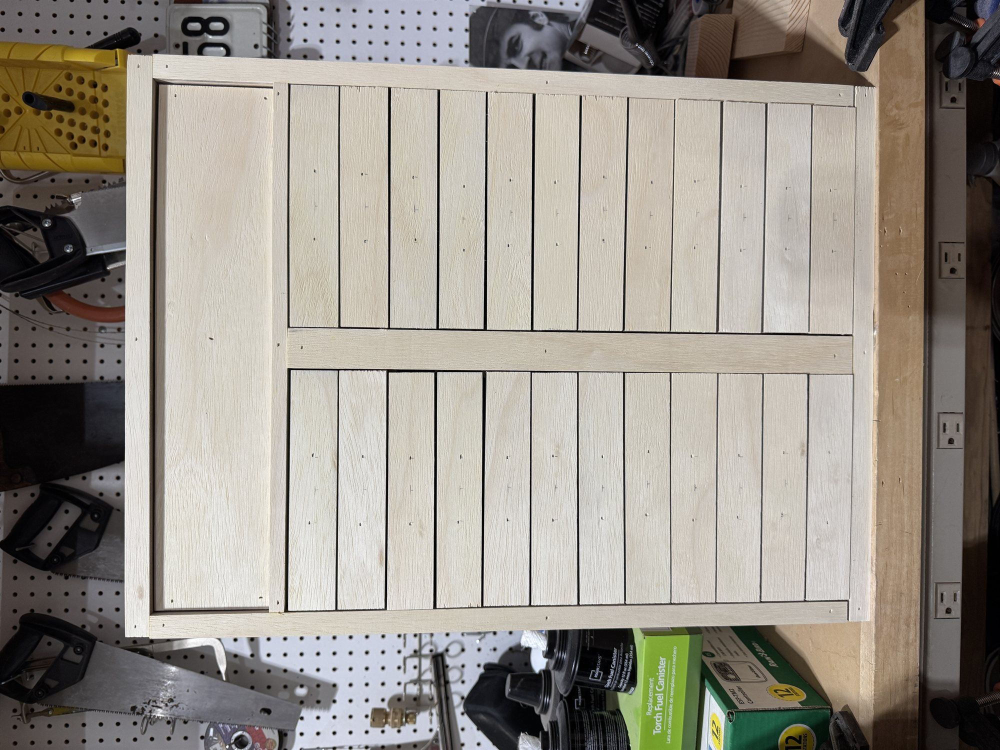